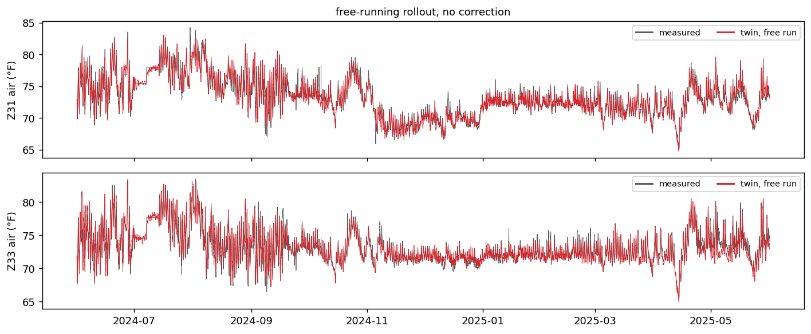
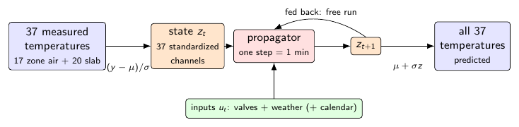
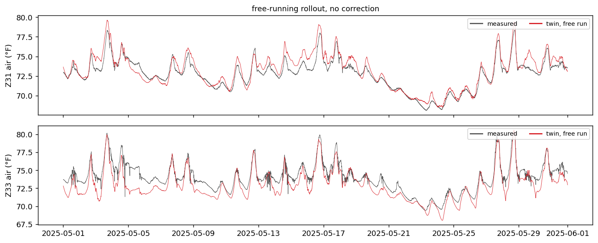
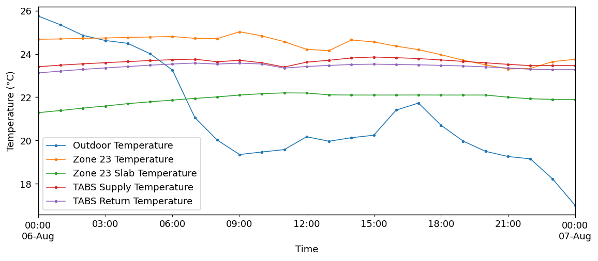

A recurrent model that advances the thermal state of a building one minute at a time, learned from a year of its own sensor record.

One year of room air temperature: grey is the building's own record, red is the twin. The model is seeded once, on 1 June 2024, then integrated for 525,599 steps using only weather, the calendar, and the room's own equipment. Nothing corrects it along the way.
Explore forecasts Code Data Run it in Colab
HouseZero is an ultra-low-energy office building at Harvard that runs on natural ventilation, geothermal heat and radiant slabs, and logs everything it does. We use a year of that record to learn a model of how its rooms warm and cool.
The model carries 37 measured temperatures, the air and radiant slab of every zone. At each minute it reads its own state together with the things it cannot change or that an operator decides: outdoor temperature, sunlight, the valve commands the building's control system issues, the window openings, and the time of day. A recurrent cell turns that into a correction, which is added back to the state. Repeating the step is what produces the year above.
Every input is either exogenous or operator-decided, so a forecast never needs a value nobody could know in advance.

Errors below are free-running: the model is started once and then left alone, so any small bias compounds over the interval. May 2025 is held out of the fit entirely.
| Model | Full year | May (held out) | Jan onward |
|---|---|---|---|
| All 37 channels, jointly | 1.4 | 1.2 | 1.0 |
| Room Z31 alone | 0.63 | 0.79 | 0.59 |
| Room Z33 alone | 0.65 | 1.23 | 0.74 |
For scale, guessing the annual average gives 3.0 °F, and a fully linear version of the same model gives 2.2 °F.
A single room can be modelled on its own, with two states and only that room's own equipment, and it does better on that room than the 37-channel model does. It is given different inputs, so this is not a controlled comparison.

| Horizon | This model | Nothing changes | Typical day |
|---|---|---|---|
| 1 hour | 0.34 | 0.36 | 3.00 |
| 12 hours | 0.98 | 2.20 | 2.89 |
| 1 day | 1.07 | 1.49 | 2.97 |
| 1 week | 1.32 | 2.57 | 2.96 |
From about an hour out it beats assuming the building stays where it is, and it stays under 1.4 °F all the way to a week.
The dataset, the split and the baselines are fixed, so a new model can be compared against these numbers without rerunning anything of ours. The three rules that make a comparison meaningful here:
Seed once, then run free. The model may read the measured state at a single starting minute. After that it advances on its own output. It never sees a measured temperature again, which is what makes a year-long error meaningful rather than a one-step error repeated.
Only inputs a forecast could have. Weather, the calendar, and what the control system commands are fair. Anything the building produces in response is not: the supply-water temperature is the obvious trap, and it is why our single-room numbers are marked as reconstruction rather than forecast.
May 2025 is held out. It must not enter fitting, scaling, or model selection. Report the full year, the held-out month, and January onward.
| Approach | Full year | May (held out) |
|---|---|---|
| Always predict the annual mean | 3.00 | 3.00 |
| Typical-day profile | 2.97 | 2.96 |
| Linear twin (PCA + linear propagator) | 2.2 | — |
| nlLED, all 37 channels jointly | 1.4 | 1.2 |
| nlLED, room Z31 alone | 0.63 | 0.79 |
Produce one array, pred, where pred[i] is your
estimate of the temperature at minute i+1. Then this is the whole
evaluation:
import numpy as np, pandas as pd
CH = "zone/Z31/air_temperature"
df = pd.read_csv("data.csv", index_col=0, usecols=["timestamp", CH])
df.index = pd.to_datetime(df.index, utc=True).tz_convert("America/New_York")
y = df[CH].to_numpy()
v0 = df.index.searchsorted(pd.Timestamp("2025-05-01", tz=df.index.tz))
def rmse(pred, lo=0):
return float(np.sqrt(np.mean((y[lo + 1:] - pred[lo:]) ** 2)))
print("full year", rmse(pred))
print("held out ", rmse(pred, v0))
The trained weights are in the repository, so you can reproduce our row of the
table rather than taking it on trust. fit.Z31.pt carries the
normalisation constants and the channel order alongside the weights, and
explorer.py shows the full rollout loop.
ck = torch.load("fit.Z31.pt", weights_only=False, map_location="cpu")
cell = torch.nn.LSTMCell(len(ck["states"]) + len(ck["externals"]) + 3, 64)
head = torch.nn.Linear(64, len(ck["states"]))
cell.load_state_dict(ck["cell"]); head.load_state_dict(ck["head"])
z, hc = z0, None # z0 = standardised state at the seed minute
for t in range(horizon):
hc = cell(torch.cat([z, u[t]], 1), hc)
z = z + head(hc[0]) # residual step, one minute
Besides scoring forecasts, the record has been used to fit grey-box resistance-capacitance models for the same rooms, to drive a detailed Modelica model of one room as a high-fidelity stand-in for the real building, and to test controllers in simulation before anything is applied to the building itself. The identifiability limit above is the interesting part for control work: the thermostat and the room cancel in the record, so the actuator gain has to come from physics rather than from fitting.
Everything below runs from the published data. The build is checksummed, so the file you get is the file we trained on.
git clone https://github.com/slitvinov/hzconvert cd hzconvert ./bootstrap.sh
This downloads the twelve published tables, merges them on the minute index,
renames every column to a canonical name, and checks the result against a
recorded md5. You end up with one file, data.csv, of 525,600 rows
and 202 channels covering June 2024 to May 2025.
python3 fit.py Z31
About ten minutes on one GPU. Dropping the argument fits the joint model over all 37 channels instead. Checkpoints carry the normalisation constants and the channel names, so a saved model is self-contained.
import torch
ck = torch.load("fit.Z31.pt", weights_only=False, map_location="cpu")
ck["states"] # ['zone/Z31/air_temperature', 'zone/Z31/slab_temperature']
ck["externals"] # the nine inputs, in the order the model expects
A self-contained notebook builds the dataset and trains a room twin from scratch in Colab, with nothing to install locally.
The merge is reversible: the twelve source files can be rebuilt from the merged one and compared byte for byte, which is how we know nothing was lost. As an external check, the figures of the published HouseZero data descriptor are redrawn from our merged file and reproduce the original.

Gaps in the record are left visible rather than quietly repaired. The weather station is missing about 5% of the year and outdoor humidity about 80%; interpolation happens only inside the fitting script, and only for the channels a given model actually uses.
The dataset is published by the Harvard Center for Green Buildings and Cities and described in Han et al., A two-year dataset of energy, environment, and system operations for an ultra-low energy office building, Scientific Data 11, 938 (2024). The code here is MIT licensed; the dataset keeps the licence of its figshare deposit.